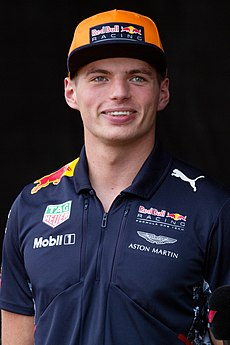

O Campeonato Mundial de Fórmula 1 da FIA de 2022 foi a 73ª temporada do Campeonato Mundial de Fórmula 1, que é reconhecido pela Federação Internacional de Automobilismo (FIA), o órgão regulador do automobilismo internacional, como a mais alta categoria de competição para carros de corrida monopostos. O campeonato foi disputado em 22 etapas, tendo iniciado no Barém, em 20 de março, e terminado nos Emirados Árabes Unidos, em 20 de novembro. Nesta temporada ocorreu a estreia do Grande Prêmio de Miami, realizado no Autódromo Internacional de Miami. Equipes e pilotos competiram para serem campeões mundiais de construtores e de pilotos, respectivamente. Na temporada de 2022 foi introduzido mudanças significativas nos regulamentos técnicos do esporte. Originalmente, essas mudanças deveriam ser introduzidas em 2021, mas foram adiadas para 2022 em resposta ao impacto da pandemia de COVID-19.[1][2] Em 9 de outubro de 2022, Max Verstappen venceu o Grande Prêmio do Japão em Suzuka, sagrando-se bicampeão mundial de Fórmula 1.
| Campeão | Vice-Campeão | Terceiro Lugar |
|---|---|---|
|  | |
|
| Max Verstappen | Charles Leclerc | Sergio Pérez |
| Red Bull Racing-RBPT | Ferrari | Red Bull Racing-RBPT |
Os seguintes pilotos e equipes participaram do Campeonato Mundial de Fórmula 1 de 2022:
| Nome | Sigla | Rodada |
|---|---|---|
| Guanyu Zhou | ZHO | 1–22 |
| Valtteri Bottas | BOT | 1–22 |
| Pierre Gasly | GAS | 1–22 |
| Yuki Tsunoda | TSU | 1–22 |
| Fernando Alonso | ALO | 1–22 |
| Esteban Ocon | OCO | 1–22 |
| Sebastian Vettel | VET | 3–22 |
| Lance Stroll | STR | 1–22 |
| Nico Hülkenberg | HUL | 1–2 |
| Charles Leclerc | LEC | 1–22 |
| Carlos Sainz Jr | SAI | 1–22 |
| Kevin Magnussen | MAG | 1–22 |
| Mick Schumacher | MSC | 1–22 |
| Daniel Ricciardo | RIC | 1–22 |
| Lando Norris | NOR | 1–22 |
| Lewis Hamilton | HAM | 1–22 |
| George Russell | RUS | 1–22 |
| Max Verstappen | VER | 1–22 |
| Sergio Pérez | PER | 1–22 |
| Nicholas Latifi | LAT | 1–22 |
| Alexander Albon | ALB | 1–22 |
| Nyck de Vries | DEV | 16 |
| Equipes |
|---|
| Alfa Romeo F1 Team Orlen[4][5] |
| Scuderia AlphaTauri |
| BWT Alpine F1 Team[13] |
| Aston Martin Aramco Cognizant F1 Team[19] |
| Scuderia Ferrari |
| Haas F1 Team |
| Mercedes-AMG Petronas F1 Team[39] |
| Oracle Red Bull Racing[43] |
| Williams Racing |
| McLaren F1 Team |
A Honda optou por não dar continuidade ao seu programa de fornecimento de motores e deixará a Fórmula 1 após o final da temporada de 2021.[57] Esta decisão levou a Red Bull a assumir o programa de motores da Honda e o gerenciando internamente, criando uma nova divisão chamada Red Bull Powertrains para fornecer unidades de potência para as equipes Red Bull e AlphaTauri.[45][46]
Antes do Grande Prêmio dos Países Baixos de 2021, Kimi Räikkönen anunciou sua intenção de se aposentar no final da temporada de 2021, encerrando sua carreira na Fórmula 1 após 19 temporadas.[58] A vaga deixada por Räikkönen na Alfa Romeo foi ocupada por Valtteri Bottas, que havia saído da Mercedes no final de 2021.[9] Com George Russell substituindo Bottas,[59][60] desocupando seu assento na Williams que foi preenchido por Alexander Albon.[61] O piloto de Fórmula 2 Guanyu Zhou foi promovido para a Fórmula 1 pela equipe Alfa Romeo, no lugar de Antonio Giovinazzi,[62] que deixou a equipe no final de 2021.[63] Zhou se tornou no primeiro piloto chinês a competir na Fórmula 1.[62] Nikita Mazepin deveria competir originalmente pela Haas pelo segundo ano consecutivo. Porém, em razão a invasão russa da Ucrânia, seu contrato foi rescindido.[64] Com Kevin Magnussen assumindo o lugar de Mazepin na equipe estadunidense.[32]
Antes do Grande Prêmio do Barém, Sebastian Vettel testou positivo para a COVID-19. Ele foi substituído na Aston Martin pelo piloto reserva Nico Hülkenberg, que havia corrido pela última vez no Grande Prêmio de Eifel de 2020, pilotando pela equipe Racing Point.[24]
| Grande Premio | Circuito |
|---|---|
| Grande Prêmio do Barém | Circuito Internacional do Barém |
| Grande Prêmio da Arábia Saudita | Circuito Corniche de Gidá |
| Grande Prêmio da Austrália | Circuito de Albert Park |
| Grande Prêmio da Emília-Romanha | Autódromo Enzo e Dino Ferrari |
| Grande Prêmio de Miami | Autódromo Internacional de Miami |
| Grande Prêmio da Espanha | Circuito de Barcelona-Catalunha |
| Grande Prêmio de Mônaco | Circuito de Mônaco |
| Grande Prêmio do Azerbaijão | Circuito Urbano de Bacu |
| Grande Prêmio do Canadá | Circuito Gilles Villeneuve |
| Grande Prêmio da Grã-Bretanha | Circuito de Silverstone |
| Grande Prêmio da Áustria | Red Bull Ring |
| Grande Prêmio da França | Circuito Paul Ricard |
| Grande Prêmio da Hungria | Hungaroring |
| Grande Prêmio da Bélgica | Circuito de Spa-Francorchamps |
| Grande Prêmio dos Países Baixos | Circuito de Zandvoort |
| Grande Prêmio da Itália | Autódromo Nacional de Monza |
| Grande Prêmio de Singapura | Circuito Urbano de Marina Bay |
| Grande Prêmio do Japão | Circuito de Suzuka |
| Grande Prêmio dos Estados Unidos | Circuito das Américas |
| Grande Prêmio do México | Autódromo Hermanos Rodríguez |
| Grande Prêmio de São Paulo | Autódromo de Interlagos |
| Grande Prêmio de Abu Dhabi | Circuito de Yas Marina |